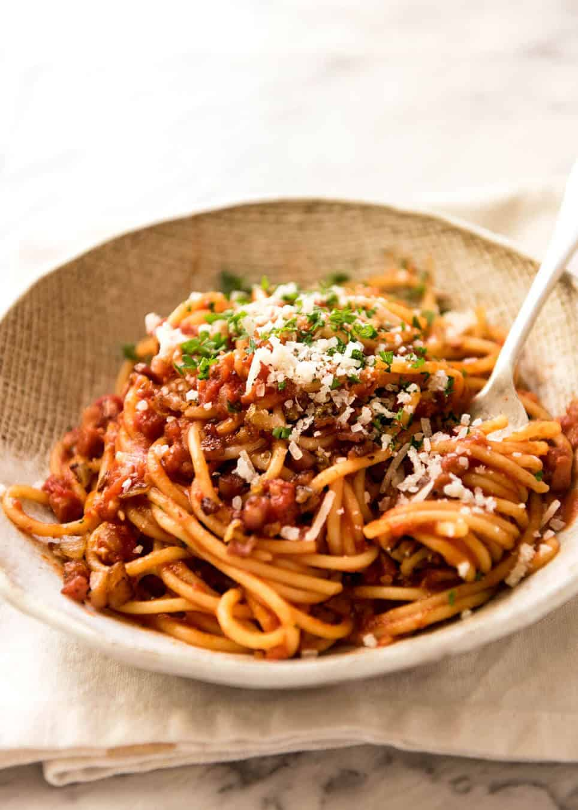

Pasta with bacon

Ingredients
- 500g Spaghetti
- 1 tsp olive oil
- 250g bacon
- 100g canned crushd tomatoes
- Salt and pepper
- Pinch of Sugar
Preparations
- Bring a large pot of water to the bowl. Add a pinch of salt. Cook pasta according to packet but MINUS 2
minutes.
- Meanwhile, heat oil in a skillet over high heat. Add bacon and cook for 1 minute, then add garlic and
onion and cook for 3 minutes or until onion is translucent and bacon is golden. Drain excess fat if
desired.
- Add tomato, bring to simmer and cook for 2 minutes, then turn down to medium high.